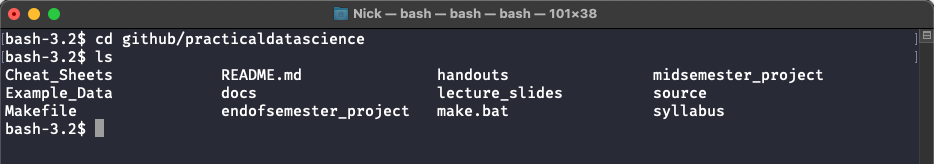

The Command Line, Basics¶
It’s probably good to start by answering the question: What is the command line?
The command line is a tool for talking to your operating system (e.g. macOS, Windows, etc.) using text instead of by moving around a mouse and clicking on things. Just as you can use your mouse to open folders, move and rename files, and launch programs, so too can you use the terminal to ask you operating system to do the same things.
Terminology¶
Before we get into the details of the terminal, though, a note on terminology: there are lots of names that float around that basically mean the same thing, including terminal, shell, command line, and bash. In this tutorial, the specific program we will be using is called bash. But if you’re working on a Mac, you’d never know you were using bash because Apple calls bash Terminal. Also, bash is based on a program called shell, so you may also hear the term shell used to
describe the tool we’ll be using today. But for all intents and purposes, the terms bash, command line, Terminal, and shell are basically interchangeable on a mac or linux computer.
We’re using bash because it’s the default terminal program on nearly all Macs and Linux computers (the operating systems of Mac and Linux computers are very similar, and are often just referred to as POSIX computers). That’s important, because almost all computers in the cloud run Linux (including not just companies like Amazon Web Services, but also university research clusters). And if you want to work directly with a computer in the cloud, you will almost never get to use a pretty
graphical user interface, so you’ll have to use a terminal, making bash a great choice to learn on.
The one place this equivalence breaks down is on Windows. By default, Windows does not use bash, but instead one of several windows-specific tools (like CMD or PowerShell) to allow this kind of text-based interaction with your operating system. But to make life confusing, these will also often be referred to as “the terminal” or “command line”. Thankfully, we can install bash on Windows! So, IF YOU ARE USING WINDOWS, GO TO THISPAGE FOR DIRECTIONS ON MAKING BASH
AVAILABLE ON WINDOWS! before starting any exercises.
So in summary:
bashandshell: two (almost identical) programs for talking to you computer via text. Standard on Mac and Linux Systems.terminal: sometimes used colloquially to refer to any system that lets you talk to you computer via text, but also the name Apple uses when you runbash.DOSandCMD: Window’s version ofbashandshell. Same purpose, different syntax.
Why Should I Learn The Command Line?¶
There are three main reasons to learn to use the command line.
More tools are available through the command line than through graphical user interface. It turns out that it takes a lot of work to make a program that has pretty icons and windows that pop up, so lots of people make tools but don’t bother to make pretty graphical interfaces. This is especially true for free and open-source software. So by learning to use the command line, you gain access to lots of powerful tools that would otherwise be unavailable. For example, you basically have to use the command line* to:
install and manage packages in many programming languages like Python and Julia
connect to research servers for working with big computer clusters for advanced data analysis
manage git repositories
You won’t always have a graphical interface. If your work ever requires you to use a remote server with, say, more computing power, those systems probably won’t offer a graphical user interface.
Sometimes you want to do something OVER AND OVER. Renaming a file by clicking on it, deleting the name, typing in a new name, and hitting return is great if you only need to rename one file. But what if you want to rename hundreds? The command line gives you the ability to write little scripts to do this kind of work for you.
Learning Command Line Basics¶
Now that you have a sense of what the command line is about, I recommend you try out this tutorial (“Introduction to Shell for Data Science”) to get some experience working with it (the command line is used enough that people have already created great tutorials – I won’t insult their work by trying to re-create them). If you would prefer a DataCamp alternative, you can try the first three modules of the Software Carpentry course on this topic, though I don’t think it’s quite as good.
The first section of that tutorial (“Manipulating Files and Directories”) is free (though you do have to create an account) and will give you a pretty good introduction. If you want you can keep going and get better at manipulating files and things in the command line, but that’s not usually a first-order need.
Once you’re done, come back here and we’ll talk a little about general principles of the command line.
Making the Command Line Friendlier¶
If you installed ``Cmder`` on windows, as suggested above, ignore this section!
OK, if you’re using a Mac or Linux machine, the basic command line is ugly, and doesn’t offer much of an interface. That’s why I recommend installing a slightly nicer program like Oh My Zsh! that causes your terminal to offer slightly more information than the default shell, especially if you use git. For example:
Default Terminal:

With Oh My Z!:

See how it now shows the folder I’m in on the left; shows that I’m in a git project when I navigate into programming4ds and tells me the branch (don’t worry if that doesn’t mean much to you), and highlights folders in blue so you can tell what’s a folder and what’s a file? Just helps keep you sane. :)
Tab-Completion¶
If you’ve installed either oh-my-zsh! (mac) or Cmder (windows) then your command line now has a very useful ability: tab-completion! If you start to type the name of a file then hit tab, the command line will try and fill in the full file name.
To illustrate, suppose you are looking at the following folder:
[2]:
cd ~/github/programming4ds/example_data/command_line
ls
a_folder_with_stuff hello.txt
example_csvs just_another_file.txt
If I want to change my working directory to the a_folder_with_stuff folder, I don’t need to type out the whole name: I can just type cd a_, press tab, and the command line will fill in the folder name itself.
Note that the command line can only fill in a file once you typed enough letters that there’s only one full name that would work. For example, if you are in a folder with files called my_file1.txt, my_file2.txt, and my_file3.txt and you type open my_ [tab], the command line can’t fill in the file name because my_ could be the beginning of any of these file names.
If you end up in this situation your command line will first try and fill in as much as it can (so it will fill in open my_ to open my_file) and wait; if you hit tab again, it will list out the files that it can’t decide between.
Command Line Exercises¶
OK, got all that? Let’s do some exercises!
* There are some graphical user interfaces that are meant to reduce the need to use the command line for things like managing python packages and git repositories, but as of 2019, they are not yet full replacements for command line tools.